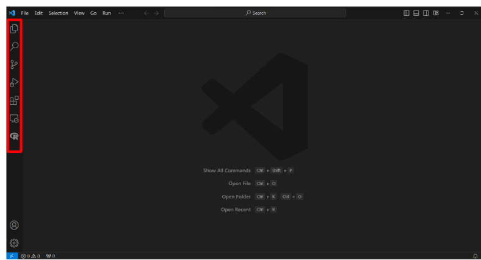
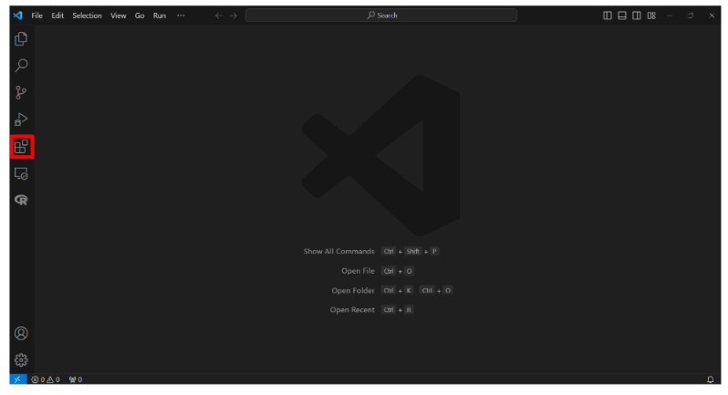
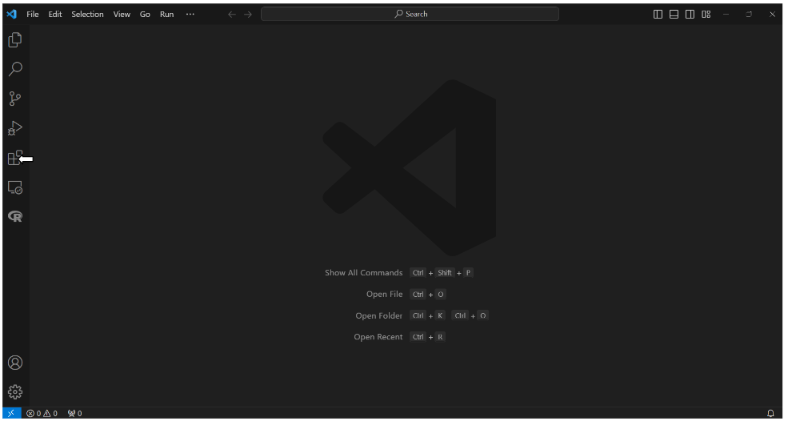
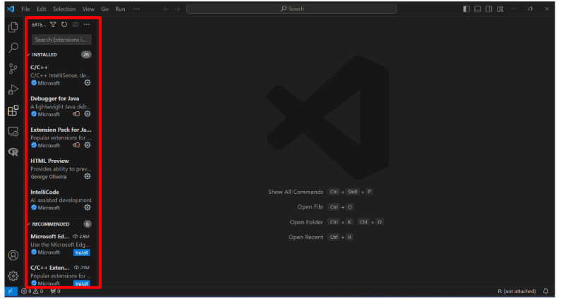
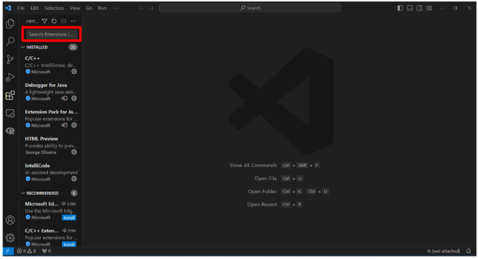
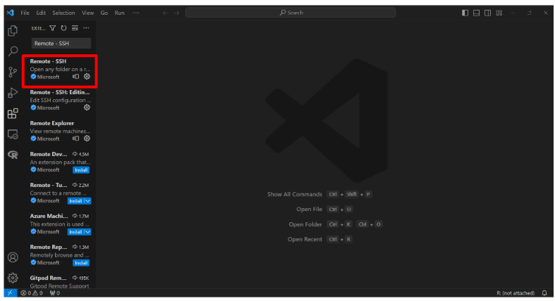

Step 1
Look to menu bar on the left side
Step 2
Go to the fifth icon down
Step 3
Hover your cursor over the extension icon
Step 4
Click on the extension icon
Step 5
Click the search bar
Step 6
Type “Remote - SSH”

Step 7
Click on Remote - SSH extension
Step 8
Hover your cursor over install icon

Step 9
Click the install icon